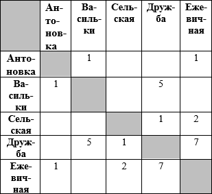

Решение задания 4
Вопрос
Учитель Иван Петрович живет на станции Антоновка, а работает на станции Дружба. Чтобы успеть с утра на уроки, он должен ехать по самой короткой дороге. Проанализируйте таблицу и укажите длину кратчайшего пути от станции Антоновка до станции Дружба:
Решение
Из анализа таблицы дорог находим, что кратчайший путь из Антоновки до Дружбы составляет 4 единицы длины.
Ответ: 4